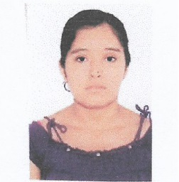

|
Nombres y Apellidos: Claudia Maricel Saldaña Zárate Estado Civil: Soltera Nacionalidad: peruana DNI: 70109865 Edad: 28 años Dirección:Av. Los Sauces MZ.29 LT.21 El Porvenir Celular: 932578013 Correo Electrónico: Claudi9218@hotmail.com |
 |
Resumen Funcional
Técnica en Farmacia con experiencia en manejo de técnicas de ventas. Experiencia en BPA y BPD, responsable, trabajo en equipo y logro de resultados, con iniciativa y liderazgo. Con excelente grado de adaptabilidad, disposición para el trabajo a presión, actitud para desarrollar apropiadamente las sugerencias y órdenes de superiores Y compañeros de trabajo. Con ganas de aprender cosas nuevas y seguir superando en formación académica y laboral.
Formación académica
• EDUCACIÓN SUPERIOR
Instituto Superior Tecnológico Particular "Pablo Casals"- Trujillo
Especialidad de farmacia
Título profesional obtenido: Técnico en Farmacia
2011 – 2013
• EDUCACIÓN SECUNDARIA:
Colegio particular no escolarizado "Juan Pablo II"- El Porvenir
2006 – 2009
• EDUCACIÓN PRIMARIA
Colegio nacional "El Indoamericano"- El Porvenir
1999 – 2005
Experiencia Profesional
• Boticas "Felicidad"
Cargo: Técnico en farmacia- atención al cliente (ventas, caja, entrega de productos, realización de inventarios.)
Periodo: Desde julio del 2014 hasta enero del 2018.
• Clínica "San Antonio"
Cargo: Técnico en farmacia- dispensación de medicamentos
Periodo: Desde marzo del 2018 hasta febrero del 2019.
• Clínica "San Antonio"
Cargo: Técnico en farmacia- dispensación de medicamentos
Periodo: junio 2019-2020
Cursos y seminarios de capacitación
Evento: curso farmacia y cosmética natural: DERMOCOSMETICA
Lugar: auditorio del colegio químico farmacéutico – la libertad – Trujillo
Fecha: octubre 2018
Créditos: 2
Evento: curso de actualización y capacitación en “farmacia clínica”
Lugar: auditorio del colegio químico farmacéutico – la libertad – Trujillo
Fecha: noviembre 2017
Créditos: 2
Evento: I seminario de investigación en “plantas medicinales-fitoquímica”
Lugar: auditorio de la universidad san pedro – la libertad – Trujillo
Fecha: junio 2017
Horas académicas: 18 horas
Créditos: 1
Evento: II jornada académica de la escuela de farmacia y bioquímica
Lugar: auditorio de la universidad san pedro – la libertad – Trujillo
Fecha: mayo 2017
Horas académicas: 16 horas
Créditos: 1
Seminario de Farmacia Oncológica
Lugar: auditorio "PABLO CASALS" covicorti junio 2013
Horas académicas: 30 horas
Créditos: 1.5